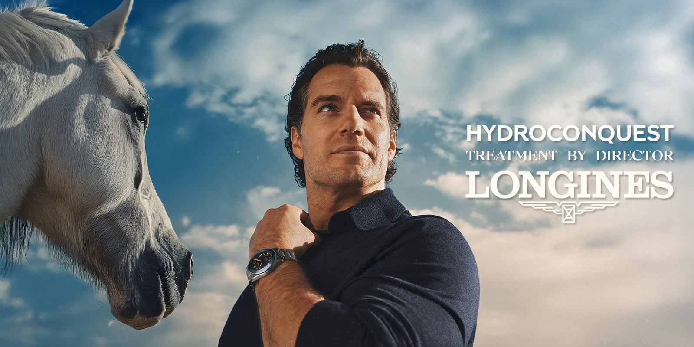
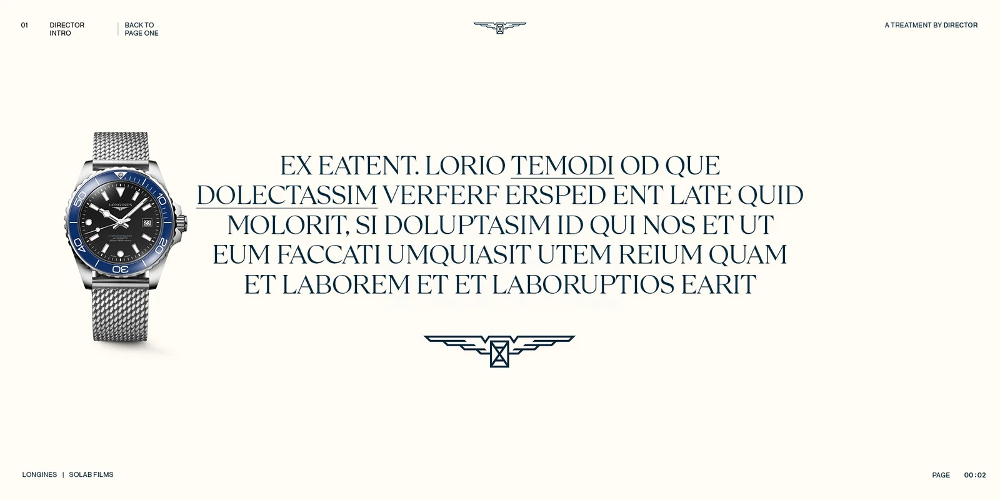
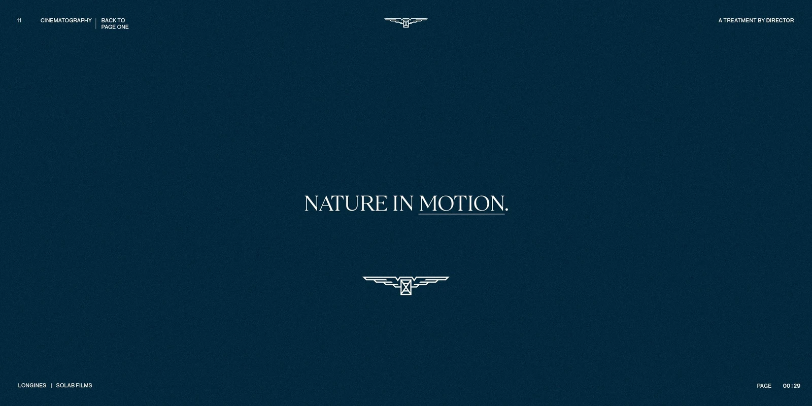
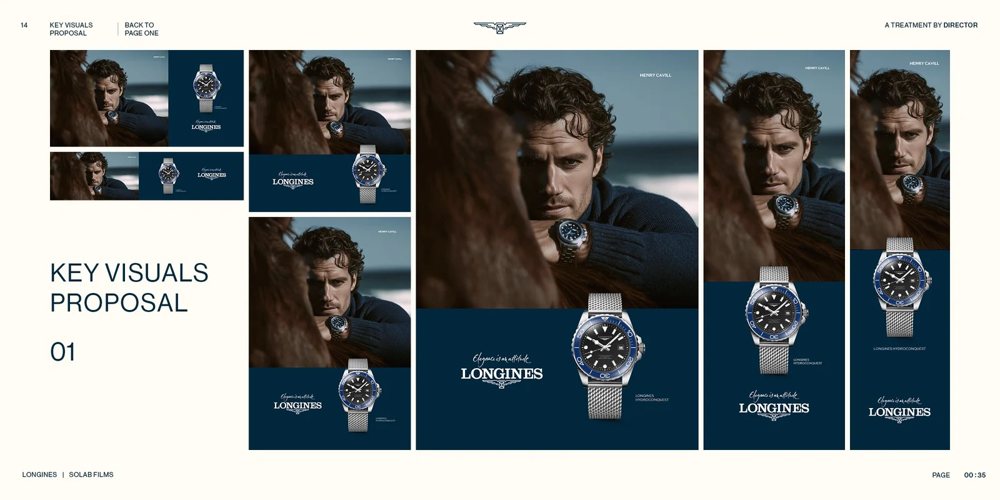

LONGINES
DIRECTOR'S TREATMENT
2025
VISUAL STRATEGY AND TREATMENT DESIGN. FROM CURATED ICONOGRAPHY TO FINAL LAYOUT, CRAFTING THE VISUAL LANGUAGE FOR A LONGINES CAMPAIGN.




DIRECTOR'S TREATMENT
2025
VISUAL STRATEGY AND TREATMENT DESIGN. FROM CURATED ICONOGRAPHY TO FINAL LAYOUT, CRAFTING THE VISUAL LANGUAGE FOR A LONGINES CAMPAIGN.



